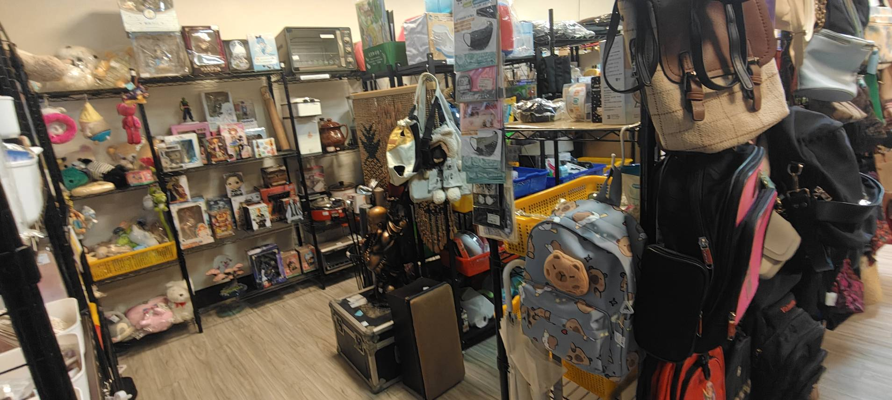

歡迎來到 蚤激安寄賣小舖！
您家中是否也堆滿了許多「食之無味，棄之可惜」的物品？那些買了很少用、或是充滿回憶卻已不再需要的東西，不該只是佔據空間的負擔，更不該成為地球的垃圾。

我們是一家致力於環保與資源循環的二手寄賣店，店面位於桃園市桃園區守法路12號1樓。在這裡，我們相信「世界上沒有絕對的垃圾，只有放錯位置的寶貝」。
透過我們的平台，您可以輕鬆將不再需要的物品進行寄賣，讓這些舊物搖身一變，成為其他人眼中的寶藏。這不僅能幫您騰出生活空間，還能將閒置物品換成現金，真正實現「垃圾變黃金」！
寄賣的方式很簡單：把閒置物品帶來店裡，由店家協助建檔、定價並上架販售，您不用自己拍照、寫文案、回訊息，也不用處理面交和寄送。商品售出後，依照約定的比例拆帳給您。詳細的會員制度、收費方式與取款規則，請見「寄賣須知」頁面。
店內採開架式陳列，寄賣品項包羅萬象，常見的分類包括：
因為寄賣商品每天都在流動，每次來店都可能遇見不一樣的寶物，這正是二手尋寶的樂趣。部分品項基於安全、衛生與法規考量無法收受，寄賣前請先確認寄賣須知中的拒收／限收說明，以免白跑一趟。
交通與聯絡方式請見「聯絡我們」頁面，也歡迎加入我們的 LINE（@041ypvvx）預約取款或詢問寄賣。
這是一個充滿驚喜的中繼站，無論您是想為舊愛尋找新主人，還是想來挖掘生活中的小確幸，
蚤激安寄賣小舖都誠摯歡迎您的光臨！